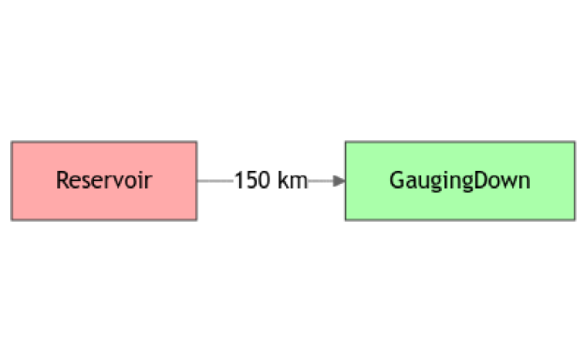
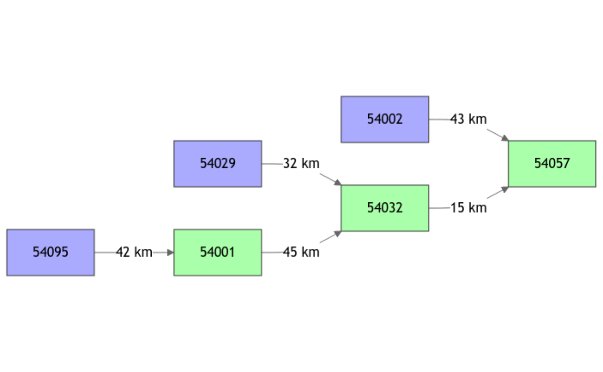
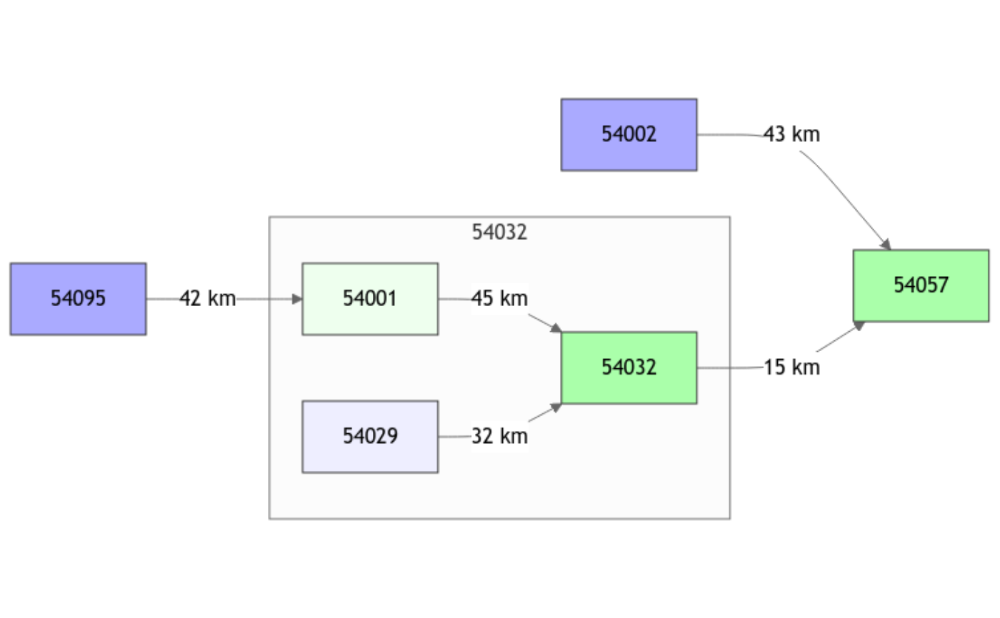
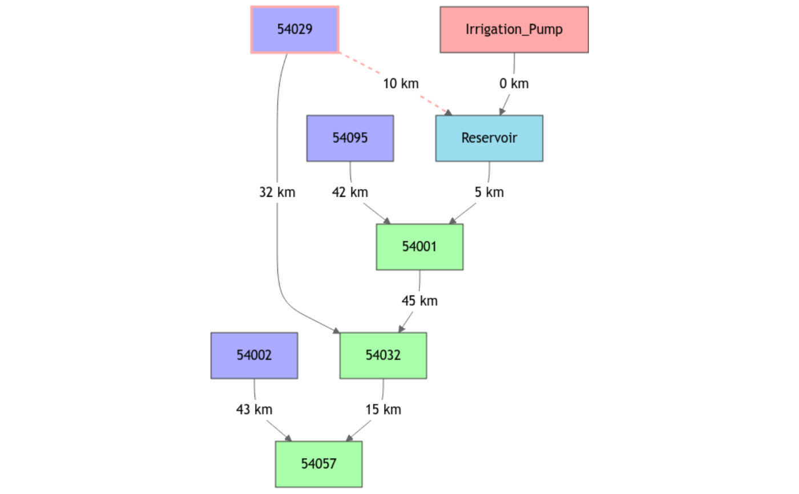
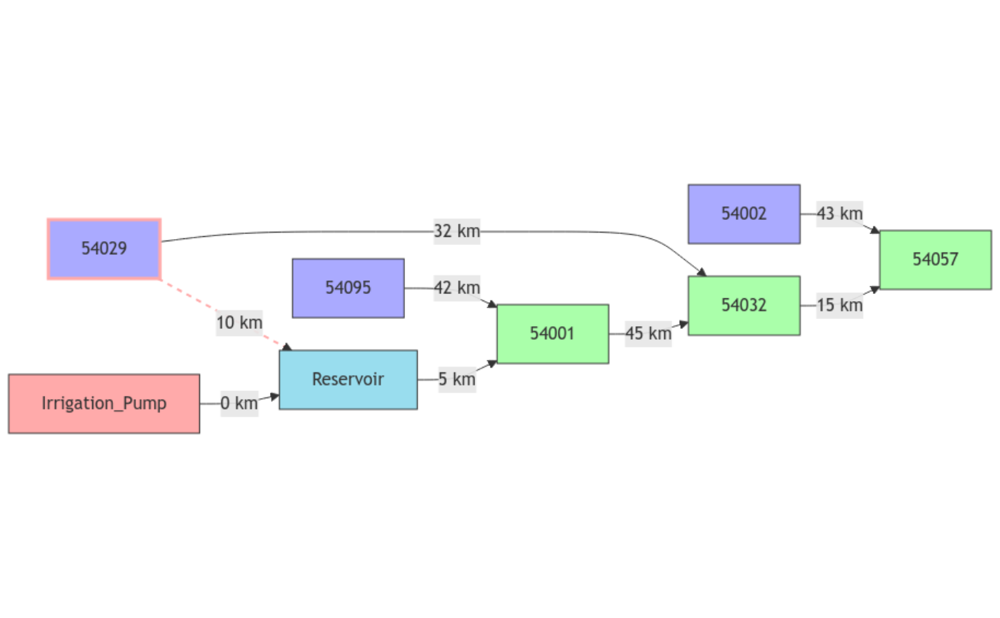

R/plot.GRiwrm.R
plot.GRiwrm.RdDisplay of a diagram representing the network structure of a GRiwrm object
# S3 method for class 'GRiwrm'
plot(
x,
display = TRUE,
orientation = "LR",
with_donors = TRUE,
box_colors = c(UpstreamUngauged = "#eef", UpstreamGauged = "#aaf", IntermediateUngauged
= "#efe", IntermediateGauged = "#afa", Reservoir = "#9de", DirectInjection = "#faa"),
defaultClassDef = "stroke:#333",
header = "%%{init: {'theme': 'neutral'} }%%",
footer = NULL,
...
)[GRiwrm object] data to display. See CreateGRiwrm for details
logical if TRUE plots the diagram, returns the mermaid code otherwise
character orientation of the graph. Possible values are "LR" (left-right), "RL" (right-left), "TB" (top-bottom), or "BT" (bottom-top).
logical for drawing boxes around ungauged nodes and their donors
list containing the color used for the different types of nodes
character default style apply to all boxes
mermaid script to add before the generated script (init configuration)
mermaid script to add after the generated script
further parameters passed to mermaid
Mermaid code of the diagram if display is FALSE, otherwise the function returns the diagram itself.
This function only works inside RStudio because the HTMLwidget produced by DiagrammeR is not handled on some platforms
library(airGRiwrm)
#########################################
# Network of 2 nodes distant of 150 km: #
#########################################
# - an upstream reservoir modelled as a direct flow injection (no model)
# - a gauging station downstream a catchment of 360 km² modelled with GR4J
db <- data.frame(id = c("Reservoir", "GaugingDown"),
length = c(150, NA),
down = c("GaugingDown", NA),
area = c(NA, 360),
model = c(NA, "RunModel_GR4J"),
stringsAsFactors = FALSE)
griwrm_basic <- CreateGRiwrm(db)
griwrm_basic
#> id down length area model donor
#> 2 GaugingDown <NA> NA 360 RunModel_GR4J GaugingDown
#> 1 Reservoir GaugingDown 150 NA <NA> Reservoir
# Network diagram with direct flow node in red, intermediate sub-basin in green
plot(griwrm_basic)

###################################################
# GR4J semi-distributed model of the Severn River #
###################################################
data(Severn)
nodes <- Severn$BasinsInfo
nodes$model <- "RunModel_GR4J"
str(nodes)
#> 'data.frame': 6 obs. of 13 variables:
#> $ gauge_id : chr "54057" "54032" "54001" "54095" ...
#> $ gauge_name : chr "Severn at Haw Bridge" "Severn at Saxons Lode" "Severn at Bewdley" "Severn at Buildwas" ...
#> $ gauge_lat : num 52 52 52.4 52.6 52.1 ...
#> $ gauge_lon : num -2.23 -2.2 -2.32 -2.53 -1.94 -2.39
#> $ area : num 9885 6865 4330 3723 2208 ...
#> $ elev_mean : int 145 170 175 186 99 212
#> $ station_type : chr "VA" "US" "US" "US" ...
#> $ flow_period_start : chr "1971-07-01" "1970-10-01" "1970-10-01" "1984-03-01" ...
#> $ flow_period_end : chr "2015-09-30" "2015-09-30" "2015-09-30" "2015-09-30" ...
#> $ bankfull_flow : num 460 340 420 285 125 190
#> $ downstream_id : chr NA "54057" "54032" "54001" ...
#> $ distance_downstream: num NA 15 45 42 43 32
#> $ model : chr "RunModel_GR4J" "RunModel_GR4J" "RunModel_GR4J" "RunModel_GR4J" ...
# Mismatch column names are renamed to stick with GRiwrm requirements
rename_columns <- list(id = "gauge_id",
down = "downstream_id",
length = "distance_downstream")
griwrm_severn <- CreateGRiwrm(nodes, rename_columns)
griwrm_severn
#> id down length area model donor
#> 4 54095 54001 42 3722.68 RunModel_GR4J 54095
#> 5 54002 54057 43 2207.95 RunModel_GR4J 54002
#> 6 54029 54032 32 1483.65 RunModel_GR4J 54029
#> 3 54001 54032 45 4329.90 RunModel_GR4J 54001
#> 2 54032 54057 15 6864.88 RunModel_GR4J 54032
#> 1 54057 <NA> NA 9885.46 RunModel_GR4J 54057
# Network diagram with upstream basin nodes in blue, intermediate sub-basin in green
plot(griwrm_severn)

####################################################################
# Severn network with an ungauged station at nodes 54029 and 54001 #
####################################################################
nodes_ungauged <- nodes
nodes_ungauged$model[nodes_ungauged$gauge_id %in% c("54029", "54001")] <- "Ungauged"
# By default the first gauged node at downstream is used for parameter calibration (54032)
# Add a `donor`column for defining manually an upstream or sibling donor
nodes_ungauged$donor <- as.character(NA)
nodes_ungauged$donor[nodes_ungauged$id == "54001"] <- "54095"
griwrm_ungauged <- CreateGRiwrm(nodes_ungauged, rename_columns)
#> Ungauged node '54001' automatically gets the node '54032' as parameter donor
#> Ungauged node '54029' automatically gets the node '54032' as parameter donor
griwrm_ungauged
#> id down length area model donor
#> 4 54095 54001 42 3722.68 RunModel_GR4J 54095
#> 5 54002 54057 43 2207.95 RunModel_GR4J 54002
#> 3 54001 54032 45 4329.90 Ungauged 54032
#> 6 54029 54032 32 1483.65 Ungauged 54032
#> 2 54032 54057 15 6864.88 RunModel_GR4J 54032
#> 1 54057 <NA> NA 9885.46 RunModel_GR4J 54057
# Network diagram with gauged nodes of vivid color, and ungauged nodes of dull color
plot(griwrm_ungauged)

###########################################################
# Severn network with a Diversion on the node "54029" #
# to a reservoir which transfer flows to the node "54001" #
# and a withdrawal on the reservoir #
###########################################################
nodes_div <- nodes[, c("gauge_id", "downstream_id", "distance_downstream", "model", "area")]
nodes_div <- rbind(
nodes_div,
data.frame(gauge_id = c("54029" , "Reservoir" , "Irrigation_Pump"),
downstream_id = c("Reservoir", "54001" , "Reservoir" ),
distance_downstream = c(10 , 5 , 0 ),
model = c("Diversion", "RunModel_Reservoir", NA ),
area = c(NA , NA , NA))
)
griwrm_div <- CreateGRiwrm(nodes_div, rename_columns)
#> Ungauged node 'Reservoir' automatically gets the node '54001' as parameter donor
# Network diagram figures Diversion node by a red frame and a red arrow
plot(griwrm_div, orientation = "TB")

# It's also possible to custom the diagram's look with mermaid instructions
# See https://mermaid.js.org/config/directives.html and
# https://github.com/mermaid-js/mermaid/blob/master/packages/mermaid/src/schemas/config.schema.yaml#L1878
plot(griwrm_div,
header = "%%{init: {'flowchart': {'nodeSpacing': 30, 'rankSpacing': 30, 'curve': 'linear'}}}%%")
